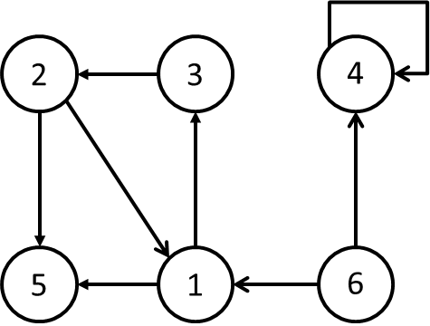
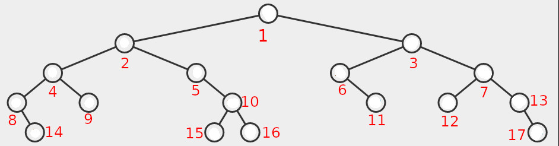
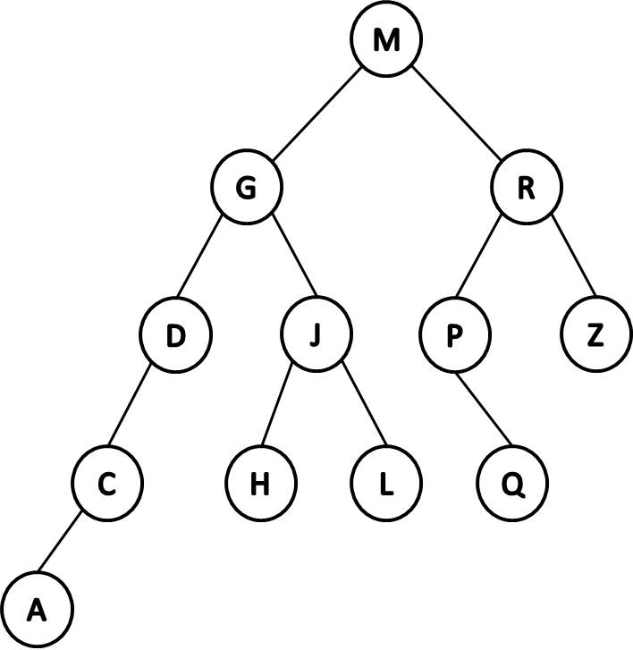

Disciplinas
-
ESTRUTURA DE DADOS. Concluído
Materiais
- Prof° Especialista: Gedson Faria, Graziela Santos de Araújo e Jonathan de Andrade Silva.
- Iniciado em quarta, 5 jun 2024, 16:13
- Estado Finalizada
- Concluída em quarta, 5 jun 2024, 17:45
- Tempo empregado 1 hora 32 minutos
- Avaliar 5,67 de um máximo de 10,00(56,67%)
Questionário ✅ ❌
Pergunta 1
A matriz de incidência em um grafo orientado G=(V,E) é uma matriz B = (bij), de ordem |V|x|E|, tal que:
bij = -1 se a aresta j sai do vértice i, 1 se a aresta j entra no vértice i, 0 em caso contrário.

Qual o tamanho em número de células da matriz de incidência para o grafo acima? Escreva apenas o número sem espaço.
Resposta: 48. ✅Conclusão:
- Definindo a ordem da matriz:
- A ordem da matriz de incidência é definida pelo produto do número de vértices (V) e do número de arestas (E).
- No grafo em questão, podemos identificar:
- Vértices (V): 6 vértices (numerados de 1 a 6).
- Arestas (E): 8 arestas (representadas pelas setas entre os vértices).
- Cálculo do tamanho da matriz:
- Substituindo os valores na fórmula da ordem da matriz:
- Ordem da matriz B = |V| x |E| = 6 x 8 = 48
- Observações:
- A matriz de incidência é uma matriz retangular com o número de linhas igual ao número de vértices e o número de colunas igual ao número de arestas.
- Cada célula da matriz de incidência representa a relação entre um vértice e uma aresta:
- -1 se a aresta sai do vértice
- 1 se asta não entra em nenhum vértice
- 0 se não há relação entre o vértice e a aresta
Pergunta 2
Em que ordem as chaves 88, 89, 90, 91, 92, 93 e 94 devem ser inseridas em uma AVL inicialmente vazia de tal forma que nenhuma rotação seja necessária para que ela se mantenha balanceada durante todo o processo de inserção? Sua resposta deve seguir o seguinte formato (sem espaços e separado por virgula): chave,chave,chave,chave,...,chave.
Resposta: 90,89,91,88,92,91,94 ❌Pergunta 3
Considerando a árvore binária abaixo, identifique o número dos nós.
Responda:
Qual a posição do nó que deve conter o maior valor mais próximo da raiz da árvore? Ou seja, o sucessor da raiz.
Resposta: 12. ❌Pergunta 4
Considere as afirmações a seguir.
- A raiz da árvore se encontra no nível 1.
- O nível de qualquer nó é igual ao nível do seu pai mais 1.
- A profundidade de uma árvore é igual ao maior nível encontrado entre todos os seus nós.
Partindo-se de tais premissas, escolha o item a seguir que contém a menor e a maior quantidade de nós, respectivamente, que poderiam estar em uma árvore binária de profundidade 4:
Escolha uma opção:
- a. 4 e 16
- b. 3 e 16
- c. 5 e 16
- d. 4 e 15
- e. 3 e 15
Resolução:
- podemos usar a fórmula
- 2d -1, onde d é a profundidade da árvore.
- Para uma profundidade 4:
- Menor quantidade de nós: 2⁴ - 1 = 15
- Maior quantidade de nós: 2⁴⁺¹ - 1 = 31 - 1 = 30
Pergunta 5
A inserção das chaves 35, 50, 40, 25, 30, 60, 78, 20 e 28, nessa ordem, em uma AVL inicialmente vazia, implica em quais tipos de rotações na árvore para garantir o seu balanceamento?
visualgoEscolha uma opção:
- a. Duas duplas à esquerda
- b. Uma dupla à direita, uma simples à esquerda e uma simples à direita
- c. Uma dupla à esquerda, uma dupla à direita e uma simples à esquerda
- d. Uma dupla à direita, uma dupla à esquerda e uma simples à direita
- e. Duas duplas à direita
Pergunta 6
Em muitas aplicações, uma característica importante que distingue os dados em uma certa estrutura é uma prioridade atribuída a cada um deles. Nessas aplicações, em geral, determinar repetidas vezes o dado de maior prioridade é uma operação importante.
Pode-se definir lista de prioridades como uma tabela na qual a cada um de seus dados está associada uma prioridade.
Em relação ao enunciado acima e de acordo com os conceitos e características de uma Lista de Prioridades, classifique os trechos abaixo com V (verdadeiro) ou F (falso) e escolha uma das alternativas:
- Essa prioridade é, exclusivamente, definida através de um valor numérico e armazenada em algum de seus campos;
- Para encontrar a ordem desejada de execução das tarefas, por exemplo, um algoritmo deve, sucessivamente, escolher o dado de maior prioridade e retirá-lo da tabela;
- Tarefas novas podem ingressar na tabela a cada instante;
- As operações possíveis de serem efetuadas com os dados da lista de prioridades são somente três: seleção do elemento de maior prioridade, inserção de um novo elemento e remoção do elemento de maior prioridade;
- Entre as alterações permitidas nos dados da tabela não se inclui a mudança na prioridade desses dados pois haveria necessidade de implementação de uma nova lista de prioridades.
Escolha uma opção:
- a. V, F, F, V, F
- b. V, V, V, F, V
- c. F, F, V, F, V
- d. V, V, V, V, F
- e. F, V, V, F, F
Pergunta 7
Ao comparar duas formas comuns de implementação de listas de prioridade, uma usando lista ordenada e outra usando heap binária, ambos armazenados em vetor, conclui-se que:
Escolha uma opção:
- a. Lista ordenada é mais indicada, pois, apesar de sua complexidade de inserção ser O( n ), suas complexidades de remoção e consulta são O( 1 );
- b. Heap binária é mais indicada, pois apresenta complexidade O(1) para inserção e remoção e O(log n) para consulta;
- c. Ambas as escolhas são boas, pois apresentam as mesmas complexidades para inserção, remoção e consulta;
- d. Lista ordenada é mais indicada, pois apresenta complexidade O(1) para inserção, remoção e consulta;
- e. Heap binária é mais indicada, pois apresenta complexidade O(log n) para inserção e remoção e O(1) para consulta;
Resolução:
- Heap binário é geralmente preferido para implementar filas de prioridade devido às suas complexidades de inserção e remoção eficientes, ambas O(log n), e complexidade de consulta O(1).
Pergunta 8
Na lista de adjacências correspondente ao grafo orientado a seguir, as entradas Adj[6] e Adj[4] são vazias.
Escolha uma opção: Verdadeiro ou Falso.
Resposta: Falso. ✅Pergunta 9
Dada a árvore binária de busca a seguir, escreva as chaves visitadas em um percurso/passeio simétrico. Escreva todas as chaves como mostrado na figura (em maiúsculo) e sem espaço entre elas. Ex: IOUEA.
 Resposta: DBCAHFIAJIKLM. ❌Pergunta 10
Os processos (.....) podem ser classificados em relação ao estado, podendo ser (.....) , em sequência, ou (.....) , em cadeia. Neste, é possível definir um conjunto enumerável ou finito, naquele, o caso é contrário. Em relação ao tempo pode ser classificado em (.....) e (.....) , no primeiro o tempo é infinito ou incontável, já no segundo, é finito ou contável.
Opções: discreto, discretos, estocásticos, contínuos, contínuo.
Resposta: ✅ ❌.Resolução:
Os processos estocásticos ✅ podem ser classificados em relação ao estado, podendo ser contínuos ✅ , em sequência, ou discretos ✅ , em cadeia. Neste, é possível definir um conjunto enumerável ou finito, naquele, o caso é contrário. Em relação ao tempo pode ser classificado em discreto ❌ e contínuo ❌ , no primeiro o tempo é infinito ou incontável, já no segundo, é finito ou contável.